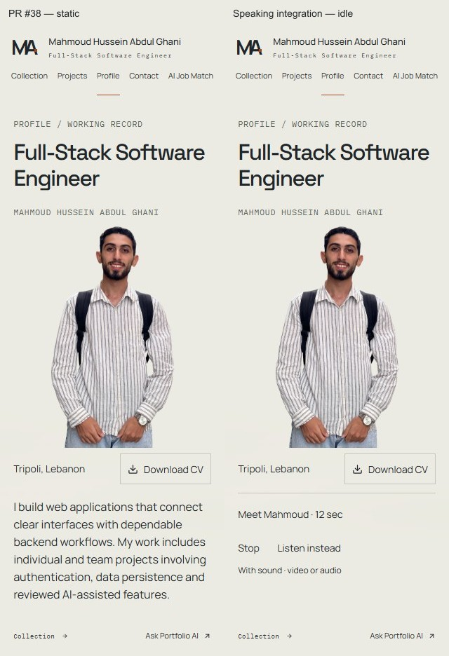
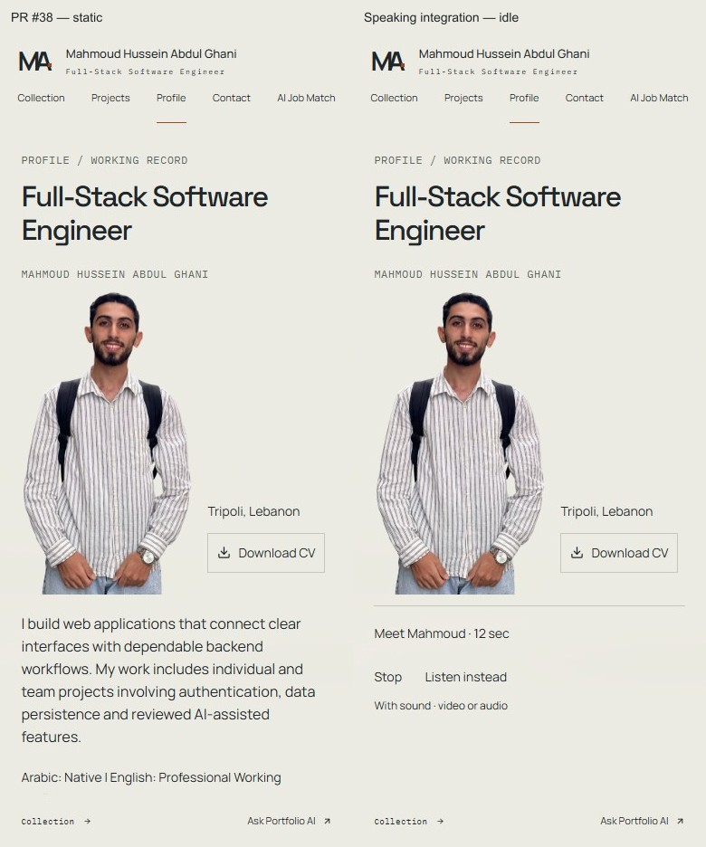
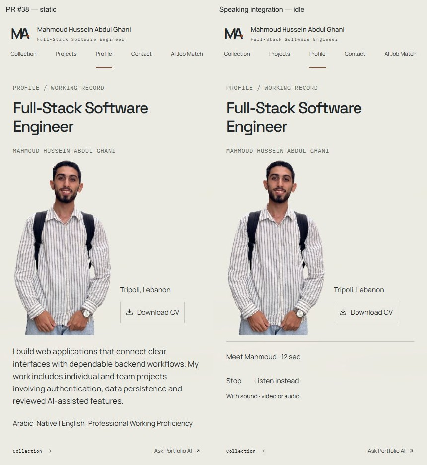
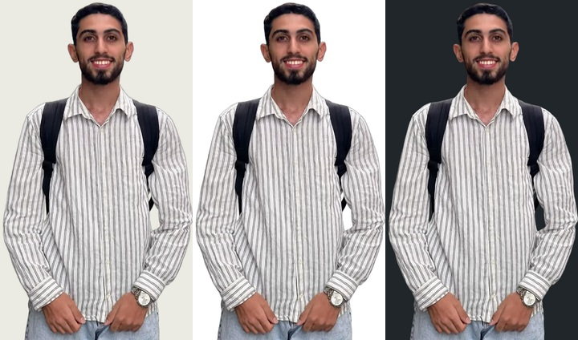
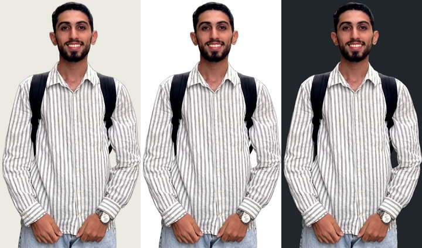
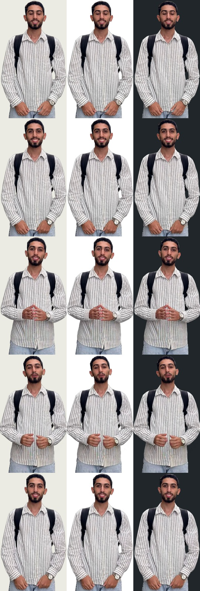
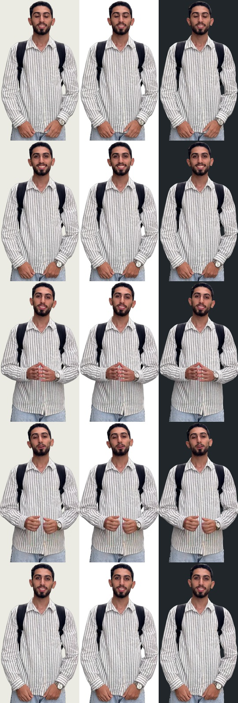

Left: PR #38 static adoption at c86d182. Right: the normal production build with explicit playback controls. The approved photograph and stage geometry remain unchanged. This offline page contains static evidence; use the draft PR’s exact /profile Preview for the working player. Vercel sign-in may be required. No production promotion is performed.



One decoded playback frame; captions are outside the figure.
Phone playback imageDesktop playback imageThese composites use actual decoded Chrome frames from the compiled route. They are review backgrounds; the production page keeps its cream background.


Each row is one time; columns are cream, white and charcoal. Samples show complete hands and natural source framing, but do not certify every generated frame.


Measured playback, network and CV results · Changed files
Windows Chrome emulation and frozen read-only public GET/CV fixtures. Physical Android/iOS, Safari, screen-reader speech, direct audio audition and subjective lip-sync assessment are not claimed.